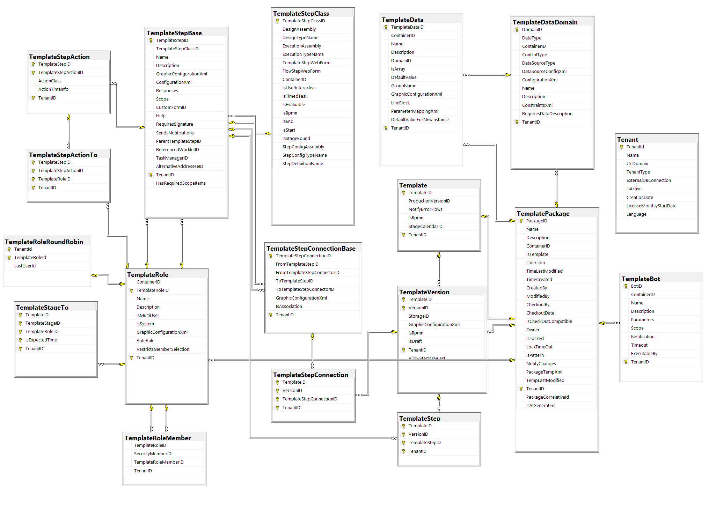
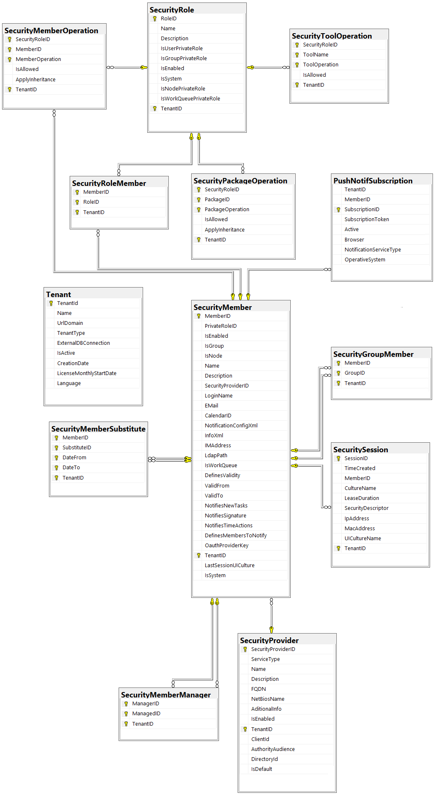

Modelo de base de datos
Introducción
Este documento describe el esquema de la base de datos de Qflow, detallando el uso que recibe cada uno de los campos que la componen.
El objetivo del manual es proporcionar la información necesaria para definir reportes que utilicen la información de los procesos generados. Esta información está almacenada en la base de datos de Qflow.
La práctica usual es publicar los reportes como páginas web y agregar vínculos a ellos en Qflow Task. Para obtener información acerca de cómo agregar un vínculo a Qflow Task y cómo controlar el acceso a esos vínculos, consulte el manual de Qflow Task.
Organización de este manual
Este manual está dividido en las siguientes secciones:
Esquema de datos: describe las tablas de Qflow que pueden ser útiles en la elaboración de reportes.
Diagramas de Entidad Relación: describe gráficamente las relaciones entre las tablas de Qflow.
Esquema de datos
Esta sección describe las tablas de Qflow y los campos que las componen.
Tablas: Procesos
Las siguientes tablas almacenan la información sobre los procesos en ejecución.
Flow
Esta tabla almacena la raíz de la definición de la instancia de proceso.
TenantID: Identificador del espacio de trabajo.
FlowID: Identificador del proceso.
FlowCorrelativeID: Identificador numérico único del proceso.
TemplateID: Identificador de la plantilla del proceso.
VersionID: Identificador de la versión de plantilla del proceso.
Name: Nombre del proceso.
Description: Descripción del proceso.
StarterUser: Usuario que inició el proceso.
StartDate: Fecha de inicio del proceso.
Importance: Importancia del proceso (Low = 0, Normal = 1, High = 2).
Flag: Texto que indica al usuario el estado del proceso.
Progress: Progreso del proceso.
FlowStatus: Estado del proceso (Active = 0, Paused = 5, Finalized = 8)
IsSystem: Bandera que indica si el proceso es un proceso interno del sistema.
EndDate: Fecha de finalización del proceso (null si el proceso no se ha finalizado).
EndUser: Usuario que dio finalización al proceso.
HasWaitingThread: Bandera que indica si el proceso tiene algún hilo en espera.
HasErrorThread: Bandera que indica si el proceso tiene algún hilo en error.
AdminFinalized: Bandera que indica si el proceso fue finalizado administrativamente.
CurrentFlowStageID: Identificador de la etapa activa.
CurrentTemplateStageID: Identificador de la definición de la etapa activa
ParentFlowID: Identificador del proceso padre (para el caso de inicio de subprocesos).
FlowAttachment
Esta tabla mantiene la información de los adjuntos a un proceso, pero no el contenido de los adjuntos.
TenantID: Identificador del espacio de trabajo.
FlowID: Identificador del proceso.
AttachID: Identificador del adjunto.
AttachVersion: Identificador numérico de la versión del adjunto.
Name: Nombre del adjunto.
Description: Descripción del adjunto.
TimeLastModified: Fecha de última modificación del adjunto.
TimeCreated: Fecha de creación del adjunto.
CreatedBy: Usuario que creó el adjunto.
ModifiedBy: Último usuario en modificar el adjunto.
CheckoutBy: Último usuario que desprotegió el adjunto.
CheckoutDate: Fecha de última desprotección del adjunto.
StorageID: Identificador del almacenamiento utilizado para el adjunto.
Size: Tamaño del adjunto.
CheckOutSize: Tamaño del adjunto desprotegido.
FlowStepID: Paso donde se asoció el adjunto.
FlowStepToID: Instancia del paso interactivo en donde se asoció el adjunto.
PropertiesXml: Propiedades del adjunto.
RefDataId: Identificador del dato tipo documento que agregó el adjunto, si corresponde.
RefDataInstance: Instancia del dato tipo documento que agregó el adjunto, si corresponde.
StorageType: Indica en que tipo de almacenamiento está guardado el adjunto. Los posibles valores son: 0 = Base de datos de Qflow, 1 = Azure Blob Storage, 2 = Base de datos externa.
ModifiedByExternalEmail: Email del usuario que modificó el adjunto en caso de ser externo.
FlowAttachmentHistory
Esta tabla mantiene la información histórica de los adjuntos a un proceso, pero no el contenido de los adjuntos.
TenantID: Identificador del espacio de trabajo.
FlowID: Identificador del proceso.
AttachID: Identificador del adjunto.
AttachVersion: Identificador numérico de la versión del adjunto.
Name: Nombre del adjunto.
Description: Descripción del adjunto.
TimeLastModified: Fecha de última modificación del adjunto.
TimeCreated: Fecha de creación del adjunto.
CreatedBy: Usuario que creó el adjunto.
ModifiedBy: Último usuario en modificar el adjunto.
StorageID: Identificador del almacenamiento utilizado para el adjunto.
Size: Tamaño del adjunto.
TimeModified: Fecha de modificación del adjunto.
FlowStepID : Paso en donde se modificó el adjunto.
FlowStepToID: Instancia del paso interactivo en donde se modificó el adjunto.
FlowStepName: Nombre del paso en donde se modificó el adjunto.
RefDataId: Identificador del dato tipo documento que agregó el adjunto, si corresponde.
RefDataInstance: Instancia del dato tipo documento que agregó el adjunto, si corresponde.
ModifiedByExternalEmail: Email del usuario que modificó el adjunto en caso de ser externo.
FlowAttachmentStorage
Esta tabla mantiene el contenido de los adjuntos.
TenantID: Identificador del espacio de trabajo.
FlowID: Identificador del proceso.
AttachID: Identificador del adjunto.
AttachVersion: Identificador numérico de la versión del adjunto.
Size: Tamaño del adjunto.
Content: Bytesque representan el contenido del adjunto.
CheckOutSize: Tamaño del adjunto desprotegido.
CheckOutContent: Bytes que representan el contenido del adjunto desprotegido.
FullTextID: Identificador para indexado full-text.
ContentType: Formato del documento (Mime).
TimeStamp: Marca de última indización utilizada para el indexado full-text.
IsEncrypted: Bandera que indica si el contenido del adjunto fue encriptado por Qflow.
FlowComments
Esta tabla mantiene los comentarios realizados en el proceso.
TenantID: Identificador del espacio de trabajo.
FlowCommentID: Identificador del comentario.
FlowID: Identificador del proceso.
FlowStepID: Identificador del paso donde se realizó el comentario, si existe.
FlowStepToID: Identificador de la instancia del paso donde se realizó el comentario, si existe.
MemberID: Identificador del usuario que realizó la acción.
TimeStamp: Fecha de creación del comentario.
CommentText: String que contiene el comentario realizado.
FlowStepName: String que contiene el nombre del paso en el que se realizó el comentario, si existe.
EditAction: String que contiene la acción en la cual se realizó el comentario. Los valores pueden ser: 0 = StartFlow, 1 = EditFlow, 3 = RespondTask, 8 = BotJob, 9 = Unknown.
Response: String que contiene la respuesta de la tarea en cual se realizó el comentario. Se guarda si en la tarea de usuario se marcó la opción de «Agregar respuesta a comentarios».
FlowCounter
Esta tabla se utiliza para manejar contadores dentro del proceso.
TenantID: Identificador del espacio de trabajo.
FlowID: Identificador del proceso.
Name: Nombre del contador.
Value: Valor actual del contador.
FlowCounterHistory
Esta tabla se utiliza para manejar los históricos de los contadores dentro del proceso.
TenantID: Identificador del espacio de trabajo.
FlowID: Identificador del proceso.
Name: Nombre del contador.
Value: Valor del contador.
TimeModified: Fecha en que se modificó el contador.
FlowStepID: Paso en el que se modificó el contador.
FlowData
Esta tabla se utiliza para manejar los datos de aplicación del proceso.
TenantID: Identificador del espacio de trabajo.
FlowID: Identificador del proceso.
TemplateDataID: Identificador de la definición de dato de aplicación correspondiente a este dato.
DataType: Tipo de dato (System.String, System.Decimal, System.Boolean, System.DateTime).
Value: Lista de valores correspondientes al dato en formato Xml. Los valores dentro de los nodos se representan en formato universal.
NormalizedValue: Columna calculada basada en el primer valor del dato. Utilizada en índices para mejorar el desempeño de filtros y ordenamientos por datos.
FlowDataHistory
Esta tabla se utiliza para manejar el historial de los datos de aplicación del proceso.
TenantID: Identificador del espacio de trabajo.
FlowID: Identificador del proceso.
TemplateDataID: Identificador de la definición de dato de aplicación correspondiente a este dato.
TimeModified: Fecha de modificación del dato.
FlowStepID: Paso donde el dato fue modificado.
FlowStepToID: Instancia del paso interactivo en donde el dato fue modificado.
DataType: Tipo de dato (System.String, System.Decimal, System.Boolean, System.DateTime).
Value: Lista de valores correspondientes al dato en formato Xml. Los valores dentro de los nodos se representan en formato universal.
ModifiedBy: Identificador del usuario que realizó la acción que modificó el dato.
FlowStepName: Nombre del paso en el que se modificó el dato.
EditAction: Acción que se realizó para modificar el dato (StartFlow = 0, EditFlow = 1, UpdateEditFlow = 2, RespondTask = 3, StepBack = 4, RetryExecution = 5, StepExecution = 6, Delegate = 7, BotJob= 8, Unknown = 9).
FlowEventHandler
Esta tabla se utiliza para manejar eventos generados en tiempo de ejecución dentro del proceso (p ej: Sincronización).
TenantID: Identificador del espacio de trabajo.
FlowID: Identificador del proceso.
EventHandlerID: Identificador del evento.
TemplateStepID: Paso de la definición del proceso al cual se asocia el evento.
EventType: Tipo de evento al que se responde.
HandlerType: Tipo de manejador de eventos utilizado.
HandlerInfo: Información sobre el evento en formato Xml.
FlowEventHandlerHistory
Esta tabla se utiliza para manejar el histórico de los eventos generados en tiempo de ejecución dentro del proceso.
TenantID: Identificador del espacio de trabajo.
FlowID: Identificador del proceso.
EventHandlerID: Identificador del evento.
TemplateStepID: Paso de la definición del proceso al cual se asocia el evento.
EventType: Tipo de evento al que se responde.
HandlerType: Tipo de manejador de eventos utilizado.
HandlerInfo: Información sobre el evento en formato Xml.
TimeModified: Fecha de modificación del evento.
FlowStepID: Paso en que se modificó el evento.
FlowHistory
Esta tabla almacena datos históricos sobre cada instancia de proceso.
TenantID: Identificador del espacio de trabajo.
FlowID: Identificador del proceso.
Name: Nombre del proceso.
Description: Descripción del proceso.
Importance: Importancia del proceso (Low = 0, Normal = 1, High = 2).
Flag: Texto que indica al usuario el estado del proceso.
Progress: Progreso del proceso.
TimeModified: Fecha de modificación del proceso.
FlowStepID: Paso en que se modificó el proceso.
FlowStepToID: Instancia del paso interactivo en que se modificó el proceso.
ModifiedBy: Identificador del usuario que realizó la acción que modificó el proceso.
FlowStepName: Nombre del paso en el que se modificó el proceso.
EditAction: Acción que se realizó para modificar el proceso (StartFlow = 0, EditFlow = 1, UpdateEditFlow = 2, RespondTask = 3, StepBack = 4, RetryExecution = 5, StepExecution = 6, Delegate = 7, BotJob= 8, Unknown = 9).
FlowLog
Esta tabla almacena el registro de las acciones realizadas sobre los procesos.
TenantID: Identificador del espacio de trabajo.
Source: Herramienta donde se generó la acción.
ActionName: Nombre de la acción.
MemberID: Usuario que disparó la acción.
FlowID: Identificador del proceso sobre el que se disparó la acción.
ThreadID: Identificador del hilo sobre el que se disparó la acción.
StepID: Identificador del paso sobre el que se disparó la acción.
StepToID: Identificador de la instancia del paso interactivo sobre la que se disparó la acción.
TimeStamp: Fecha en que se disparó la acción.
Hash: Campo utilizado para validar la integridad del log.
IpAddress: Dirección IP del cliente que disparó la acción.
MacAddress: MacAddress del cliente que disparó la acción.
ActionInfo: Información adicional de la acción, guardada en formato XML.
FlowLogHash
Esta tabla se utiliza para validar la integridad del log de procesos.
TenantID: Identificador del espacio de trabajo.
FlowId: Campo utilizado para validar la integridad del log.
LogCount: Campo utilizado para validar la integridad del log.
Hash: Campo utilizado para validar la integridad del log.
FlowRole
Esta tabla almacena la información sobre los roles del proceso.
TenantID: Identificador del espacio de trabajo.
FlowID: Identificador del proceso.
TemplateRoleID: Identificador del rol de proceso.
FlowRoleHistory
Esta tabla almacena la información histórica sobre los roles del proceso.
TenantID: Identificador del espacio de trabajo.
FlowID: Identificador del proceso.
TemplateRoleID: Identificador del rol de proceso.
TimeModified: Fecha de modificación del rol.
FlowStepID: Paso en que se modificó el rol.
FlowStepToID: Instancia del paso interactivo en que se modificó el rol.
FlowRoleMembers: Miembros del rol almacenados en formato XML.
ModifiedBy: Identificador del usuario que realizó la acción que modificó el rol.
FlowStepName: Nombre del paso en el que se modificó el rol.
EditAction: Acción que se realizó para modificar el rol (StartFlow = 0, EditFlow = 1, UpdateEditFlow = 2, RespondTask = 3, StepBack = 4, RetryExecution = 5, StepExecution = 6, Delegate = 7, BotJob= 8, Unknown = 9).
FlowRoleMember
Esta tabla almacena la información sobre los miembros de los roles del proceso.
TenantID: Identificador del espacio de trabajo.
TemplateRoleID: Identificador del rol de proceso.
FlowID: Identificador del proceso.
SecurityMemberID: Identificador del miembro de seguridad asociado al proceso.
FlowRoleMemberID: Identificador del rol asociado al rol (cuando corresponde debido a una regla)
FlowStage
Esta tabla almacena la información de las etapas transcurridas y en proceso para los procesos.
TenantID: Identificador del espacio de trabajo.
FlowID: Identificador del proceso.
FlowStageID: Identificador de la etapa.
TemplateID: Identificador de la plantilla de proceso.
TemplateStageID: Identificador de la definición de la etapa.
StartDate: Fecha de inicio de la etapa.
LastStartDate: Última fecha en que se inició la etapa, en caso de que la etapa haya finalizado y luego se haya reactivado.
EndDate: Fecha de fin de la etapa.
TotalHours: Tiempo total de la etapa (en horas calendario).
TotalDays: Tiempo total de la etapa (en días calendario).
ExpectedEndDate: Fecha esperada para el fin de la etapa.
ExpectedHours: Tiempo esperado para el fin de la etapa (en horas calendario).
ExpectedDays: Tiempo esperado para el fin de la etapa (en días calendario).
MaximumEndDate: Fecha máxima aceptada para el fin de la etapa.
MaximumHours: Tiempo máximo aceptado para el fin de la etapa (en horas calendario).
MaximumDays: Tiempo máximo aceptado para el fin de la etapa (en días calendario).
ExpectedTimeAlertDispatched: Indica si ya se procesó la alerta de tiempo esperado de la etapa.
MaximumTimeAlertDispatched: Indica si ya se procesó la alerta de tiempo máximo de la etapa.
Status: Columna calculada que representa el estado actual de la etapa. Los valores posibles son: 0 = Con holgura, 1 = En tiempo, 2 = Retrasada.
FlowStageHistory
Almacena información que relaciona el inicio y fin de las etapas de los procesos con los pasos.
TenantID: Identificador del espacio de trabajo.
FlowID: Identificador del proceso.
FlowStageID: Identificador de la etapa.
FlowStepID: Identificador del paso que inicia o termina la etapa.
IsEnd: Indica el paso inicia o termina la etapa.
FlowStageTo
Esta tabla almacena la información de los destinatarios de alertas de las etapas transcurridas.
TenantID: Identificador del espacio de trabajo.
FlowID: Identificador del proceso.
FlowStageID: Identificador de la etapa.
MemberID: Identificador del usuario destinatario.
IsExpectedTime: Indica si el mensaje corresponde a una alerta de tiempo esperado.
TemplateID: Identificador de la plantilla de proceso.
TemplateStageID: Identificador de la definición de la etapa.
Dispatched: Fecha de despachado del mensaje.
Delivered: Fecha de envío del mensaje.
Read: Fecha de lectura del mensaje.
ReadBy: Usuario que leyó el mensaje.
Subject: Asunto del mensaje.
DeliveredPushNotification: Fecha de envío del mensaje al servicio de notificaciones push.
FlowStep
Esta tabla almacena la información de los pasos del proceso.
TenantID: Identificador del espacio de trabajo.
FlowID: Identificador del proceso.
FlowStepID: Identificador del paso del proceso.
TemplateID: Identificador de la plantilla a la que corresponde el paso.
VersionID: Identificador de la versión de la plantilla.
TemplateStepID: Identificador de la definición de paso a la que corresponde esta instancia.
TemplateStepClassID: Identificador del tipo de paso.
Name: Nombre del paso.
Description: Descripción del paso.
StepStatus: Estado del paso (Normal = 0, WithReminder = 1, WithAlert = 2, OutOfTime = 3, StepDelegated = 4, StepFinalized = 9)
TimeStarted: Fecha de inicio del paso.
TimeEnded: Fecha de finalización del paso.
PreviousStep: Paso anterior a este en el proceso.
IsUserInteractive: Especifica si por el tipo de paso este paso es interactivo con el usuario.
IsTimedTask: Especifica si este paso es evalúa acciones temporales.
IsEvaluable: Especifica si el resultado de ejecución de este paso puede ser evaluado en pasos posteriores.
Subject: Asunto del mensaje enviado al usuario en caso de tratarse de un paso interactivo.
FlowStepCorrelativeID: Identificador correlativo del paso.
StartedFlowID: Para el caso de inicio de sub proceso se almacena el identificador del proceso iniciado.
TemplateWorkletStepID: Identificador del paso de worklet al que corresponde este paso.
ParentFlowStepID: Identificador del paso de worklet (en ejecución) al que pertenece este paso.
IsGroupOutputStep: Bandera que indica si el paso corresponde a la ejecución de salida de un grupo o worklet.
FlowStageID: Identificador de la etapa a la que pertenece el paso.
TemplateStageID: Identificador de definición de la etapa a la que pertenece el paso.
FlowStepTo
Esta tabla almacena los destinatarios de los pasos interactivos del proceso.
TenantID: Identificador del espacio de trabajo.
FlowID: Identificador del proceso.
FlowStepID: Identificador del paso del proceso.
FlowStepToID: Identificador del paso con destinatario del proceso.
MemberID: Identificador del miembro al que se dirige la tarea.
ResponseKey: Clave de la respuesta dada por el usuario.
Dispatched: Fecha de despachado el mensaje.
Delivered: Fecha de entregado el mensaje.
Read: Fecha de lectura del mensaje.
ReadBy: Usuario que leyó la tarea.
Responded: Fecha de respuesta al paso
RespondedBy: Usuario que respondióel paso interactivo.
Subject: Asunto del mensaje enviado al usuario
Progress: Progreso de la tarea.
Signature: Arreglo de bytes que representa una firma digital.
SignatureType: Tipos de firma, Internal = 0, X509Unicode = 1, X509Firefox = 2, X509 = 3.
CheckoutDate: Fecha en que se tomó la tarea (cuando está dirigida a una cola de trabajo)
WorkQueueID: Identificador de la cola de trabajo (cuando está dirigida a una cola de trabajo)
Status: Bandera que indica el estado en el que se encuentra la tarea, Normal = 0, Archivada = 1, (cuando está dirigida a una cola de trabajo)
DeliveredPushNotification: Fecha de envío del mensaje al servicio de notificaciones push.
ExternalAddresseeEmail: Email del destinatario en caso de que sea externo al sistema.
Type: Tipo de tarea según su destinatario (Normal = 0, Cola de trabajo = 1, Externa = 2).
FlowStepAction
Esta tabla almacena las acciones disparadas durante la vida de un proceso (delegaciones, alertas, recordatorios, vencimientos).
TenantID: Identificador del espacio de trabajo.
FlowID: Identificador del proceso.
FlowStepID: Identificador del paso del proceso.
FlowStepActionID: Identificador de la acción tomada en un paso.
TemplateStepActionID: Identifcador de la acción definida en la plantilla de proceso.
ActionClass: Tipo de acción (Reminder = 1, Alert = 2, Time Out = 3, Delegation = 4, Dismiss = 5).
TimeFired: Fecha en que se disparó la acción.
FlowStepActionTo
Esta tabla almacena los destinatarios de las acciones interactivas disparadas durante la vida de un proceso.
TenantID: Identificador del espacio de trabajo.
FlowID: Identificador del proceso.
FlowStepID: Identificador del paso del proceso.
FlowStepActionID: Identificador de la acción tomada en un paso.
FlowStepActionToID: Identificador del la acción con destinatario tomada en un paso.
MemberID: Identificador del miembro al que se dirige la acción.
Dispatched: Fecha de despachado el mensaje.
Delivered: Fecha de entregado el mensaje.
Read: Fecha de lectura del mensaje.
ReadBy: Usuario que leyó el mensaje.
Subject: String que contiene el asunto de la acción enviado en el mensaje al usuario.
DeliveredPushNotification: Fecha de envío del mensaje al servicio de notificaciones push.
ExternalAddresseeEmail: Email del destinatario en caso de que sea externo al sistema.
IsExternal: Indica si el destinatario es externo al sistema.
FlowStepBot
Esta tabla almacena las tareas de bot pendientes.
TenantID: Identificador del espacio de trabajo.
FlowID: Identificador del proceso.
FlowStepID: Identificador del paso del proceso.
BotID: Bot asignado a la tarea.
Status: Estado de la tarea (Active = 0, Completed = 1, Aborted = 2).
Message: Mensaje de error asociado a la tarea.
FlowThread
Esta tabla almacena los hilos del proceso.
TenantID: Identificador del espacio de trabajo.
FlowID: Identificador del proceso.
ThreadId: Identificador del hilo.
ThreadStatus: Estado del hilo (Running = 0, Waiting = 1, Fork = 2, Join = 3, Error = 4, Paused = 5, Finalized = 9).
CurrentStepID: Identificador del paso actual del hilo.
ParentThreadID: Identificador del hilo padre del proceso (Utilizado en el caso de uso de Fork/Join)
StepStatus: Estado delpaso actual del hilo (Normal = 0, WithReminder = 1, WithAlert = 2, OutOfTime = 3, StepDelegated = 4, StepFinalized = 9).
ErrorMessage: Mensaje del error en el hilo de ejecución.
ParentStepID: Identificador del paso de fork asociado a este hilo
Tablas: Definición de procesos
Las siguientes tablas almacenan la información de la definición de procesos.
Template
Esta tabla almacena la información de las plantillas de procesos definidas.Los datos de esta tabla se complementan con los datos de la tabla TemplatePackage.
TenantID: Identificador del espacio de trabajo.
TemplateID: Identificador de la plantilla.
ProductionVersionID: Identificador de la versión en producción.
NotifyErrorFlows: Bandera que indica si se notifica al dueño de la plantilla cuando un proceso entra en error.
IsBpmn: Bandera que indica si la plantilla usa diseño BPMN.
StageCalendarID: Identificador del calendario utilizado para tomar el tiempo de las etapas.
TemplateBot
Esta tabla almacena la información de los bots definidos en el sistema.
TenantID: Identificador del espacio de trabajo.
BotID: Identificador del bot.
ContainerID: Identificador del contenedor.
Name: Nombre del bot.
Description: Descripción del bot.
Parameters: Información de los parámetros del bot en formato Xml.
Scope: Información del alcance del bot en formato Xml.
Notification: Información del método de notificación del bot en formato Xml.
Timeout: Información del vencimiento del bot en formato Xml.
ExecutableBy: Usuario habilitado para ejecutar el bot.
TemplateChart
Esta tabla guarda información de las gráficas personalizadas que se han diseñado.
TenantID: Identificador del espacio de trabajo.
TemplateChartID: Identificador de la gráfica.
ContainerID: Identificador del contenedor.
MemberID: Identificador del usuario dueño de la gráfica.
Name: Nombre de la gráfica.
Description: Descripción de la gráfica.
IsHighlightChart: Define si la gráfica se muestra en el menú de navegación.
ChartType: Tipo de gráfica.
Settings: Configuración de la gráfica almacenada en Xml.
RestrictPermissions: Indica si la gráfica define permisos de acceso.
TemplateChartPermission
Esta tabla guarda los permisos definidos para acceder a las gráficas.
TenantID: Identificador del espacio de trabajo.
TemplateChartID: Identificador de la gráfica.
SecurityRoleID: Identificador del rol de seguridad.
IsAllowed: Indica si se permite o deniega el acceso a la gráfica para el rol de seguridad.
TemplateCustomForm
Esta tabla almacena la información de los formularios personalizados definidos en el sistema.
TenantID: Identificador del espacio de trabajo.
CustomFormID: Identificador del formulario.
ContainerID: Identificador del contenedor.
Name: Nombre del formulario.
Description: Descripción del formulario.
UriConfiguration: String que contiene la información del formulario en formatoXml.
CustomFormTypes: String con la lista de tipos de formularios a los que aplica el formulario personalizado. Estos valores pueden ser: StartEvent, UserTask, UserNotificationTask, FlowEdit, FlowForm.
TemplateData
Esta tabla contiene la meta información de los datos de aplicación definidos en el sistema.
TenantID: Identificador del espacio de trabajo.
TemplateDataID: Identificador de la definición del dato.
ContainerID: Identificador del contenedor.
Name: Nombre del dato.
Description: Descripción del dato.
DomainID: Identificador del dominio que corresponde al dato.
IsArray: Bandera que indica si el dato puede tener más de un valor.
DefaultValue: Definición de los valores por defecto en formatoXml.
GroupName: Nombre del grupo al que pertenece el dato.
GraphicConfigurationXml: Configuración gráfica del dato en formato Xml.
LineBlock: Bloque de línea al que pertenece el dato.
ParameterMappingXml: Mapeo de parámetros del dato para el caso de utilizar dominios paramétricos definido en formato Xml.
DefaultValueForNewInstance: Valor por defecto para las nuevas instancias.
TemplateDataDomain
Esta tabla almacena la información sobre los dominios de datos definidos en el sistema.
TenantID: Identificador del espacio de trabajo.
DomainID: Identificador del dominio de datos.
DataType: Tipo de dato del dominio de datos.
ContainerID: Identificador del contenedor del dominio.
ControlType: Tipo de control utilizado por el dominio.
DataSourceType: Tipo de origende datos utilizado para el dominio.
DataSourceConfigXml: Configuración de la fuente de datos en formato Xml.
ConfigurationXml: Configuración del dominio en formato Xml.
Name: Nombre del dominio de datos.
Description: Descripción del dominio de datos.
ConstraintsXml: Restricciones del dominio de datos en formato Xml.
RequiresDataDescription: Bandera que indica si el dominio requiere buscar la descripción del identificador en la fuente de datos.
TemplateDataDomainCache
Esta tabla almacena la información de las descripciones del origen de datos a partir de un indicador.
TenantID: Identificador del espacio de trabajo.
DomainID: Identificador del dominio.
KeyValue: Valor de la clave.
Description: Valor de la descripción.
TimeLastModified: Fecha de última modificación.
TemplateEventHandler
Esta tabla almacena la información de los manejadores de eventos definidos en el sistema.
TenantID: Identificador del espacio de trabajo.
EventHandlerID: Identificador del manejador de eventos.
ContainerID: Identificador del contenedor del manejador.
Name: Nombre del manejador.
Description: Descripción del manejador.
Order: Orden en que se dispara el manejador.
HandlerInfo: Información del comportamiento del manejador de eventos.
HandlerType: Tipo de manejador de evento (SynchronousHandler, AsynchronousHandler).
TemplateEventMapping
Esta tabla almacena la información sobre el mapeo de eventos con versiones de plantillas de procesos.
TenantID: Identificador del espacio de trabajo.
TemplateID: Identificador de la plantilla.
VersionID: Identificador de la versión de la plantilla.
EventHandlerID: Identificador el manejador mapeado.
EventType: Tipo de evento mapeado.
TemplateIntegration
Esta tabla almacena información sobre las integraciones definidas en el sistema.
TenantID: Identificador del espacio de trabajo.
TemplateIntegrationID: Identificador de la integración.
ContainerID: Identificador del contenedor de la integración.
Name: Nombre de la integración.
Description: Descripción de la integración.
ParameterXml: Parámetros de la integración.
ProductionOperationName: Nombre de la operación en producción para la integración.
ConfigurationXml: Configuración adicional de la integración en formato Xml.
TemplateIntegrationClass
Esta tabla almacena información sobre los tipos de integraciones que se pueden definir en el sistema.
TemplateIntegrationClassID: Identificador del tipo de integración.
ContainerID: Identificador del contenedor
DesignAssembly: Información sobre la implementación programática del tipo de integración.
DesignTypeName: Información sobre la implementación programática del tipo de integración.
FriendlyName: Nombre del tipo de integración.
DesignViewName: Nombre de la vista que implementa el diseño de la configuración del tipo de integración.
TemplateIntegrationOperation
Esta tabla almacena la información sobre las operaciones definidas para una integración.
TenantID: Identificador del espacio de trabajo.
TemplateIntegrationID: Identificador de la integración a la que corresponde la operación.
TemplateOperationName: Nombre de la operación.
TemplateOperationInfo: Definición de la operación.
Description: Descripción de la operación.
TemplateKPI
Esta tabla guarda información de los indicadores que se han diseñado.
TenantID: Identificador del espacio de trabajo.
TemplateKPIID: Identificador del indicador.
ContainerID: Identificador del contenedor.
MemberID: Identificador del usuario dueño del indicador.
Name: Nombre del indicador.
Description: Descripción del indicador.
IsHighlightKPI: Define si el indicador se muestra en el menú de navegación.
KPIType: Tipo de indicador.
Settings: Configuración del indicador almacenada en Xml.
RestrictPermissions: Indica si el indicador define permisos de acceso.
TemplateKPIPermission
Esta tabla guarda los permisos definidos para acceder a los indicadores.
TenantID: Identificador del espacio de trabajo.
TemplateKPIID: Identificador del indicador.
SecurityRoleID: Identificador del rol de seguridad.
IsAllowed: Indica si se permite o deniega el acceso al indicador para el rol de seguridad.
TemplatePackage
Esta tabla almacena la información de los paquetes del sistema. Sirve de base para la definición de plantillas y versiones de plantillas.
TenantID: Identificador del espacio de trabajo.
PackageID: Identificador del paquete.
PackageCorrelativeID: Identificador numérico del paquete.
Name: Nombre del paquete.
Description: Descripción del paquete.
ContainerID: Identificador del contenedor del paquete.
IsTemplate: Bandera que indica si se trata de una plantilla.
IsVersion: Bandera que indica si se trata de una versión de plantilla.
TimeLastModified: Fecha de última modificación.
TimeCreated: Fecha de creación.
CreatedBy: Usuario que creó el paquete.
ModifiedBy: Usuario que modificó el paquete por última vez.
CheckoutBy: Usuario que desprotegió el paquete.
CheckoutDate: Fecha en que se desprotegió el paquete.
IsCheckOutCompatible: Bandera que indica si la desprotección se realizó en modo compatible.
Owner: Usuario dueño del paquete.
IsLocked: Bandera que indica si el paquete está bloqueado, bloqueando la ejecución de todos los procesos correspondientes a este paquete.
LockTimeOut: Time out para el bloqueo.
IsPattern: Bandera que indica si la definición de proceso se puede utilizar como base para la creación de una nueva definición.
NotifyChanges: Bandera que indica si el paquete debe notificar cambios.
PackageTempXml: Xml que contiene la edición temporal de la versión de template.
TempLastModified: Fecha de última actualización de la edición temporal de la versión del template.
TemplatePackageLog
Esta tabla almacena la información de registro de auditoría de los paquetes.
TenantID: Identificador del espacio de trabajo.
Source: Herramienta que origina el registro.
ActionName: Acción que origina el registro.
MemberID: Usuario que origina el registro.
PackageID: Paquete sobre el que se realizó la acción.
TimeStamp: Fecha en que se realizó la acción.
Hash: Información de integridad.
IpAddress: Dirección Ip de la estación desde la que se realizó la acción.
MacAddress: MacAddress de la estación desde la que se realizó la acción.
ActionComment: Comentario ingresado al realizar la acción.
TemplatePackageLogHash
Esta tabla se utiliza para asegurar la integridad del registro de auditoría de los paquetes.
TenantID: Identificador del espacio de trabajo.
PackageId: Información de integridad.
LogCount: Información de integridad.
Hash: Información de integridad.
TemplateParameter
Esta tabla almacena la definición de los parámetros de aplicación.
TenantID: Identificador del espacio de trabajo.
TemplateParameterID: Identificador del parámetro.
ContainerID: Identificador del contenedor del parámetro.
Name: Nombre del parámetro.
Description: Descripción del parámetro.
ParameterType: Tipo de parámetro de aplicación.
Value: Valor del parámetro.
TemplateRole
Esta tabla almacena la definición de los roles definidos en el sistema.
TenantID: Identificador del espacio de trabajo.
ContainerID: Identificador del contenedor del rol.
TemplateRoleID: Identificador del rol del proceso.
Name: Nombre del rol del proceso.
Description: Descripción del rol del proceso.
IsMultiUser: Bandera que indica si el rol permite múltiples usuarios.
IsSystem: Bandera que indica si el rol es un rol de sistema
GraphicConfigurationXml: Configuración gráfica en formato Xml.
RoleRule: Campo que indica si el rol se resuelve en tiempo de ejecución basándose en una regla.
RestrictsMemberSelection: Bandera que indica si el rol restringe la selección de miembros.
TemplateRoleMember
Tabla que almacena los miembros de un rol de proceso.
TenantID: Identificador del espacio de trabajo.
TemplateRoleID: Identificador del rol de proceso.
SecurityMemberID: Identificador del miembro de seguridad.
TemplateRoleMemberID: Identificador de la referencia a otro rol de proceso.
TemplateRoleRestriction
Tabla que almacena información acerca de qué elementos del organigrama pueden ser miembros de roles de proceso, para aquellos roles de proceso que imponen restrincciones sobre quiénes pueden ser sus miembros.
TenantID: Identificador del espacio de trabajo.
TemplateRoleID: Identificador del rol restringido.
SecurityMemberID: Identificador del miembro de seguridad.
RestrictionRule: Regla utilizada al momento de aplicar la restricción.
TemplateRoleRoundRobin
Tabla que mantiene registro del orden de asignación de un rol de proceso en caso de que el rol utilice asignación Round Robin.
TenantID: Identificador del espacio de trabajo.
TemplateRoleID: Identificador del rol restringido.
LastUserID: Identificador del último usuario asignado al rol.
TemplateStage
Tabla que guarda las etapas definidas para los procesos.
TenantID: Identificador del espacio de trabajo.
TemplateID: Identificador de la plantilla de proceso.
TemplateStageID: Identificador de la etapa.
Name: Nombre de la etapa.
Description: Descripción de la etapa.
ExpectedTime: Configuración del tiempo esperado de le etapa, almacenado en formato XML.
MaximumTime: Configuración del tiempo máximo de le etapa, almacenado en formato XML.
TemplateStageTo
Tabla que guarda los destinatarios de las alertas de etapas definidas.
TenantID: Identificador del espacio de trabajo.
TemplateID: Identificador de la plantilla de proceso.
TemplateStageID: Identificador de la etapa.
TemplateRoleID: Identificador del rol de proceso destinatario.
IsExpectedTime: Indica si el destinatario corresponde a la alerta de tiempo esperado, o si lo hace a la alerta de tiempo máximo.
TemplateStep
Tabla que almacena la información de la definición de los pasos.
TenantID: Identificador del espacio de trabajo.
TemplateID: Identificador de la plantilla de proceso.
VersionID: Identificador de la versión de la plantilla.
TemplateStepID: Identificador de la definición del paso.
TemplateStepAction
Tabla que almacena la información de acciones temporales definidas para los pasos.
TenantID: Identificador del espacio de trabajo.
TemplateStepID: Identificador de la definición del paso.
TemplateStepActionID: Identificador de la acción en el paso.
ActionClass: Tipo de acción definida
ActionTimeInfo: Información sobre los tiempos en que se dispara una acción temporal.
TemplateStepActionTo
Tabla que almacena la información sobre los destinatarios de las acciones temporales definidas para los pasos en la definición de un proceso.
TenantID: Identificador del espacio de trabajo.
TemplateStepID: Identificador de la definición del paso.
TemplateStepActionID: Identificador de la acción.
TemplateRoleID: Identificador del rol destinatario de la acción.
TemplateStepBase
Tabla que almacena la información común de los diferentes tipos de paso.
TenantID: Identificador del espacio de trabajo.
TemplateStepID: Identificador del paso.
TemplateStepClassID: Identificador de la clase de paso.
Name: Nombre del paso.
Description: Descripción del paso.
GraphicConfigurationXML: Configuración gráfica del paso.
ConfigurationXML: Configuración del paso, apropiada para el tipo de paso.
Responses: Posibles respuestas para un paso interactivo y evaluable.
Scope: Alcance de información en el formulario del paso.
CustomFormID: Identificador del formulario asociado al paso.
Help: Información de ayuda para el paso.
RequiresSignature: Indica si el paso requiere una firma.
SendsNotifications: Indica si el paso envía notificaciones a sus destinatarios.
ParentTemplateStepID: Identificador del paso padre para el caso de uso de grupos.
ReferencedWorkletID: Identificador del worklet al cual se hace referencia.
TaskManagerID: Identificador del rol encargado de la tarea.
AlternativeAddresseeID: Identificador del rol de destinatarios alternativos de la tarea.
HasRequiredScopeItems: Indica si el paso tiene algún ítem con alcance requerido.
TemplateStepClass
Tabla que almacena la información de los diferentes tipos de clases de pasos que pueden ser utilizados en un diseño de proceso.
TemplateStepClassID: Identificador de la clase de paso.
DesignAssembly: Assembly en el que se encuentra el paso que utilizará Qflow Design para desplegar la información al usuario.
DesignTypeName: Nombre de la clase que implementa el paso que utilizará Qflow Design para desplegar la información al usuario.
ExecutionAssembly: Assembly en el que se encuentra el paso que utilizará el motor de Qflow al ejecutar el proceso.
ExecutionTypeName: Nombre de la clase que implementa el paso que utilizará el motor de Qflow al ejecutar el proceso.
TemplateStepWebForm: Formulario web que se deplegará al hacer click sobre la definición del paso.
FlowStepWebForm: Formulario web que se deplegará al hacer click sobre el paso del proceso.
ContainerID: Identificador del contenedor de la definición del paso.
IsUserInteractive: Bandera que indica si el paso es interactivo con el usuario.
IsTimedTask: Bandera que indica si el paso puede definir acciones temporales.
IsEvaluable: Bandera que indica si el paso es evaluable.
IsBpmn: Bandera que indica si el paso pertenece a un diseño BPMN.
IsEnd: Bandera que indica si el paso es un paso de fin.
IsStart: Bandera que indica si el paso es un paso de inicio.
IsStageBound: Bandera que indica si el paso puede iniciar etapas.
StepConfigAssembly: Assembly en el que se encuentra la configuración del paso que utilizará Qflow Design para desplegarle la información al usuario.
StepConfigTypeName: Nombre de la clase que implementa la configuración del paso que utilizará Qflow Design para desplegarle la información al usuario.
StepDefinitionName: Tipo de definición del paso en notación BPMN.
TemplateStepConnection
Tabla que almacena la definición de los conectores entre pasos del diagrama del proceso.
TenantID: Identificador del espacio de trabajo.
TemplateID: Identificador de la plantilla de proceso.
VersionID: Identificador de la versión de la plantilla.
TemplateStepConnectionID: Identificador de la conexión.
TemplateStepConnectionBase
Tabla que almacena información común de las conexiones entre pasos del diagrama del proceso.
TenantID: Identificador del espacio de trabajo.
TemplateStepConnectionID: Identificador de la conexión.
FromTemplateStepID: Identificador del paso donde se origina la conexión.
FromTemplateStepConnectorID: Identificador del conector del paso donde se origina la conexión.
ToTemplateStepID: Identificador del paso donde termina la conexión.
ToTemplateStepConnectorID: Identificador del conector donde se conecta con el paso destino.
GraphicConfigurationXml: Información sobre la configuración gráfica de la conexión en formato XML.
IsAssociation: Bandera que indica si la conexión es parte del flujo del proceso o es sólo una asociación descriptiva.
TemplateStepEventMapping
Tabla que almacena información sobre el mapeo de eventos con pasos de la definición del proceso.
TenantID: Identificador del espacio de trabajo.
TemplateStepID: Identificador del paso.
EventHandlerID: Identificador del manejador mapeado.
EventType: Tipo de evento mapeado.
TemplateStepTo
Tabla que almacena la información sobre los destinatarios de los pasos interactivos.
TenantID: Identificador del espacio de trabajo.
TemplateStepID: Identificador del paso.
TemplateRoleID: Identificador del rol.
GuestTemplateStepTo
Tabla que almacena la información sobre los destinatarios externos de los pasos interactivos.
TenantID: Identificador del espacio de trabajo.
TemplateStepID: Identificador del paso.
AdresseeType: Tipo de destinatario. Puede ser rol (0), dato (1), parametro (2) o email (3).
AdresseeValue: Identifcador del destinatario. Puede ser un email o el id del rol, dato o parámetro correspondiente.
TemplateStepValidation
Tabla que almacena la información de la asociación de validaciones a pasos.
TenantID: Identificador del espacio de trabajo.
ValidationId: Identificador de lavalidación.
TemplateStepId: Identificador del paso.
TemplateValidation
Esta tabla almacena la información sobre las validaciones definidas en el sistema.
TenantID: Identificador del espacio de trabajo.
ValidationId: Identificador de la validación.
ContainerId: Identificador del contenedor.
Name: Nombre de la validación.
Description: Descripción de la validación.
ValidationInfo: Información de la validación definida en formato Xml.
TemplateVersion
Esta tabla almacena la información sobre la versión de la plantilla de proceso. Esta información se complementa con la información de la tabla TemplatePackage.
TenantID: Identificador del espacio de trabajo.
TemplateID: Identificador de la plantilla de proceso.
VersionID: Identificador de la versión de la plantilla.
StorageID: Identificación del medio de almacenamiento de adjuntos asociado a la versión.
GraphicConfigurationXml: Información de la configuración gráfica de la versión.
IsBpmn: Bandera que indica si la versión usa diseño BPMN.
IsDraft: Indica si la versión es un borrador o no.
AllowStartAsGuest: Indica si la versión de proceso permite inicio externo/anónimo.
TemplateVersionForm
Esta tabla almacena la información de los formularios asociados a las versiones.
TenantID: Identificador del espacio de trabajo.
TemplateId: Identificador de la plantilla.
VersionId: Identificador de la versión de la plantilla.
FormType: Indica el tipo de formulario (Formulario del proceso = 0, Formulario de edición del proceso = 1).
Scope: Información del alcance de datos, roles, adjuntos y comentarios en el formulario.
CustomFormId: Identificador del formulario personalizado utilizado.
TemplateVersionValidation
Tabla que almacena la información de la asociación de validaciones a formularios de versiones.
TenantID: Identificador del espacio de trabajo.
ValidationId: Identificador de la validación.
TemplateId: Identificador de la plantilla.
VersionId: Identificador de la versión de la plantilla.
FormType: Indica el tipo de formulario (Formulario del proceso = 0, Formulario de edición del proceso = 1).
TemplateWorklet
Esta tabla almacena la información sobre los worklets definidos en el sistema.
TenantID: Identificador del espacio de trabajo.
TemplateWorkletID: Identificador del worklet.
ContainerID: Identificador del contenedor del worklet.
Name: Nombre del worklet.
Description: Descripción del worklet.
GraphicConfigurationXml: Información de la configuración gráfica del worklet en formato Xml.
ConnectorsXml: Información de los conectores del worklet en formato Xml.
TemplateWorkletStep
Tabla que almacena información sobre los pasos contenidos en un worklet.
TenantID: Identificador del espacio de trabajo.
TemplateWorletID: Identificador del worklet.
TemplateStepID: Identificador del paso.
TemplateWorkletStepConnection
Tabla que almacena información sobre las conexiones de los pasos de un worklet.
TenantID: Identificador del espacio de trabajo.
TemplateWorkletID: Identificador del worklet.
TemplateStepConnectionID: Identificador de la conexión.
Tablas: Organigrama
Las siguientes son las tablas de la base de datos que contienen la información de los usuarios, grupos y nodos.
SecurityMember
Tabla que almacena la información sobre los usuarios, grupos y nodos del sistema.
TenantID: Identificador del espacio de trabajo.
MemberID: Identificador del usuario, grupo o nodo.
PrivateRoleID: Identificador del rol privado correspondiente al miembro.
IsEnabled: Bandera que indica si el miembro está habilitado.
IsGroup: Bandera que indica si se trata de un grupo.
IsNode: Bandera que indica si se trata de un nodo.
Name: Nombre de miembro.
Description: Descripción del miembro.
SecurityProviderID: Identificador delproveedor de seguridad utilizado para autenticar al miembro.
LoginName: Login utilizado para autenticar al miembro en el proveedor de seguridad.
Email: Correo electrónico del miembro.
CalendarID: Calendario utilizado por el miembro.
NotificationConfigXml: Información de los medios definidos para recibir notificaciones.
InfoXml: XML con propiedades avanzadas del usuario, grupo o nodo.
IMAddress: Información sobre dirección de mensajería instantánea del miembro.
LdapPath: Camino para acceder a la representación del miembro en un proveedor LDAP.
IsWorkQueue: Bandera que indica si se trata de una cola de trabajo.
DefinesValidity: Bandera que indica si la cola de trabajo define un período de validez.
ValidFrom: Fecha a partir de la cuál será válida la cola de trabajo.
ValidTo: Fecha hasta la cuál será válida la cola de trabajo.
NotifiesNewTasks: Bandera que indica si se notifican nuevas tareas en la cola de trabajo.
NotifiesSignature: Bandera que indica si se notifican firmas en la cola de trabajo.
NotifiesTimeActions: Bandera que indica si se notifica acciones temporales en la cola de trabajo.
DefinesMembersToNotify: Bandera que indica si se define una lista personalizada de destinatarios para las notificaciones de la cola de trabajo.
OAuthProviderKey: Clave que vincula al usuario con el proveedor de OAuth correspondiente si el proveedor de login del usuario es de tipo OAuth.
LastSessionUICulture: Representa el código de la cultura del usuario en su ultima sesión.
IsSystem: Indica si el usuario es un usuario interno del sistema.
SecurityGroupMember
Tabla que almacena la información sobre los miembros de grupos definidos en el sistema.
TenantID: Identificador del espacio de trabajo.
MemberID: Identificador del miembro.
GroupID: Identificador del grupo.
SecurityGroupMemberHistory
Tabla que almacena el histórico de modificaciones de membresía a grupos.
TenantID: Identificador del espacio de trabajo.
MemberID: Identificador del miembro.
GroupID: Identificador del grupo.
Action: Acción realizada (Create, Delete).
ModifiedBy: Usuario que realizó la modificación.
ModifiedDate: Fecha de modificación.
SecurityMemberLog
Esta tabla almacena la información de registros deauditoría de acciones realizadas sobre la definición del organigrama en el sistema.
TenantID: Identificador del espacio de trabajo.
Source: Herramienta desde donde se realizó la acción.
ActionName: Nombrede la acción realizada.
MemberID: Usuario que realizo la acción.
NodeID: Nodo sobre el que se realizó la acción.
TimeStamp: Fecha en que se realizó la acción.
Hash: Utilizado para validar la integridad del log.
IpAddress: Dirección IP del cliente que disparó la acción.
MacAddress: MacAddress del cliente que disparó la acción.
ItemID: Identificador del usuario o grupo objeto de la acción.
ItemName: Nombre del usuario o grupo objeto de la acción.
SecurityMemberLogHash
Esta tabla se utiliza para validar la integridad del log del organigrama.
TenantID: Identificador del espacio de trabajo.
NodeId: Campo utilizado para validar la integridad del log.
LogCount: Campo utilizado para validar la integridad del log.
Hash: Campo utilizado para validar la integridad del log.
SecurityMemberManager
Tabla que almacena la información de los usuarios que supervisan a otros usuarios (managers)
TenantID: Identificador del espacio de trabajo.
ManagerID: Identificador del supervisor.
ManagedID: Identificador del supervisado.
SecurityMemberManagerHistory
Almacena el historial de modificaciones a las relaciones de supervisión entre los miembros organizacionales.
TenantID: Identificador del espacio de trabajo.
MemberID: Identificador del supervisado.
ManagerID: Identificador del supervisor.
Action: Acción realizada (Create, Delete).
ModifiedBy: Usuario que realizó la modificación.
ModifiedDate: Fecha de modificación.
SecurityMemberOperation
Tabla que almacena la información sobre los permisos de los usuarios sobre el organigrama.
TenantID: Identificador del espacio de trabajo.
SecurityRoleID: Identificador del rol de seguridad.
MemberID: Identificador del nodo,
MemberOperation: Identificador de la operación.
IsAllowed: Bandera que indica si la acción es permitida.
ApplyInheritance: Bandera que indica si el permiso es heredable.
SecurityMemberOperationHistory
Tabla que almacena el histórico de modificaciones de permisos de los usuarios sobre el organigrama.
TenantID: Identificador del espacio de trabajo.
SecurityRoleID: Identificador del rol de seguridad.
MemberID: Identificador del nodo,
MemberOperation: Identificador de la operación.
IsAllowed: Bandera que indica si la acción es permitida.
ApplyInheritance: Bandera que indica si el permiso es heredable.
Action: Acción realizada (Create, Update, Delete).
ModifiedBy: Usuario que realizó la modificación.
ModifiedDate: Fecha de modificación.
SecurityMemberSubstitute
Esta tabla almacena la información sobre las suplencias de un usuario.
TenantID: Identificador del espacio de trabajo.
MemberID: Identificador del usuario.
SubstituteID: Identificador del substituto.
DateFrom: Fecha de comienzo de la sustitución.
DateTo: Fecha de finalización de la sustitución.
SecurityMemberSubstituteHistory
Esta tabla almacena el histórico de modificaciones de las suplencias de un usuario.
TenantID: Identificador del espacio de trabajo.
MemberID: Identificador del usuario.
SubstituteID: Identificador del substituto.
DateFrom: Fecha de comienzo de la sustitución.
DateTo: Fecha de finalización de la sustitución.
Action: Acción realizada (Create, Delete).
ModifiedBy: Usuario que realizó la modificación.
ModifiedDate: Fecha de modificación.
SecurityMemberToNotify
Tabla que almacena información sobre los miembros a notificar en notificaciones a colas de trabajo.
TenantID: Identificador del espacio de trabajo.
MemberID: Identificador de la cola de trabajo.
MemberToNotifyID: Identificador del miembro organizacional a notificar.
SecurityPackageOperation
Tabla que almacena la información sobre los permisos de los usuarios sobre los paquetes.
TenantID: Identificador del espacio de trabajo.
SecurityRoleID: Identificador del rol de seguridad.
PackageID: Identificador del paquete.
PackageOperation: Identificador de la operación.
IsAllowed: Bandera que indica si la acción es permitida.
ApplyInheritance: Bandera que indica si el permiso es heredable.
SecurityPackageOperationHistory
Tabla que almacena el histórico de modificaciones de los permisos de los usuarios sobre los paquetes.
TenantID: Identificador del espacio de trabajo.
SecurityRoleID: Identificador del rol de seguridad.
PackageID: Identificador del paquete.
PackageOperation: Identificador de la operación.
IsAllowed: Bandera que indica si la acción es permitida.
Action: Acción realizada (Create, Update, Delete).
ModifiedBy: Usuario que realizó la modificación.
ModifiedDate: Fecha de modificación.
ApplyInheritance: Bandera que indica si el permiso es heredable.
SecurityProvider
Tabla que almacena la definición de los proveedores de seguridad de la organización (por ejemplo Active Directory, OpenLDAP, NT Domain)
TenantID: Identificador del espacio de trabajo.
SecurityProviderId: Identificador del proveedor de seguridad.
ServiceType: Tipo de servicio (NTDomain, ActiveDirectory, Ldap, OAuth).
Name: Nombre del proveedor de seguridad en Qflow.
Description: Descripción del proveedor de seguridad.
FQDN: Nombre calificado del proveedor de seguridad (Full QualifiedDomainName).
NetBiosName: NombreNetBios del proveedor de seguridad (si corresponde).
AditionalInfo: Información adicional para la configuración del proveedor de seguridad en formato Xml.
IsEnabled: Bandera que indica si el proveedor está habilitado.
ClientId: Identificador de la aplicación de Azure.
AuthorityAudience: Indica qué tipo de cuentas de usuario pueden acceder.
DirectoryId: Identificador de la instancia de Azure.
IsDefault: Indica si este es el proveedor de seguridad por defecto.
SecurityRole
Tabla que almacena la información sobre los roles de seguridad definidos en el sistema. También almacena la información correspondiente a los roles privados de los miembros de seguridad (usuarios, grupos, nodos).
TenantID: Identificador del espacio de trabajo.
RoleID: Identificador del rol de seguridad
Name: Nombre del rol de seguridad
Description: Descripción del rol de seguridad
IsUserPrivateRole: Bandera que indica si es el rol privado de un usuario.
IsGroupPrivateRole: Bandera que indica si es el rol privado de un grupo.
IsNodePrivateRole: Bandera que indica si es el rol privado de un nodo.
IsWorkQueuePrivateRole: Bandera que indica si es el rol privado de una cola de trabajo.
IsEnabled: Bandera que indica si es el rol está habilitado.
IsSystem: Bandera que indica si es el rol privado es un rol de sistema.
SecurityRoleMember
Tabla que almacena los miembros de un rol de seguridad.
TenantID: Identificador del espacio de trabajo.
MemberID: Identificador del miembro.
RoleID: Identificador del rol de seguridad.
SecurityRoleMemberHistory
Tabla que almacena el histórico de modificaciones de membresía a roles de seguridad.
TenantID: Identificador del espacio de trabajo.
MemberID: Identificador del miembro.
RoleID: Identificador del rol de seguridad.
Action: Acción realizada (Create, Delete).
ModifiedBy: Usuario que realizó la modificación.
ModifiedDate: Fecha de modificación.
PushNotifSubscription
Tabla que almacena las subscripciones que tienen los usuarios con el servidor de notificaciones Push.
TenantID: Identificador del espacio de trabajo.
MemberID: Identificador del usuario.
SubscriptionID: Identificador de la subscripción.
SubscriptionToken: Token de la subscripción.
Active: Bandera que indica si la subscripción está activa.
Browser: String con el nombre del navegador que se identificó desde donde el usuario realizó la subscripción.
NotificationServiceType: Tipo de servidor de la subscripción. Los valores posibles son: 0 = Fcm.
OperativeSystem: String con el nombre del sistema operativo que se identificó desde donde el usuario realizó la subscripción.
SecuritySession
Tabla que almacena la información sobre las sesiones de los usuarios que han accedido al sistema.
TenantID: Identificador del espacio de trabajo.
SessionID: Identificador de la sesión.
TimeCreated: Fecha de creación de la sesión.
MemberID: Identificador del usuario.
CultureName: Cultura utilizada en la sesión para el formato de fechas y números.
UICultureName: Cultura utilizada en la sesión para la traducción de textos.
LeaseDuration: Duración de la sesión.
SecurityDescriptor: Descriptor de seguridad de la sesión.
IpAddress: Dirección IP del cliente que disparó la acción.
MacAddress: Dirección MAC del cliente que disparó la acción.
SecurityToolOperation
Tabla que almacena la información sobre los permisos de los usuarios sobre las herramientas.
TenantID: Identificador del espacio de trabajo.
SecurityRoleID: Identificador del rol de seguridad.
ToolName: Nombre de la herramienta.
ToolOperation: Operación definida en la herramienta.
IsAllowed: Bandera que indica si la acción es permitida.
SecurityToolOperationHistory
Tabla que almacena el histórico de modificaciones de permisos de los usuarios sobre las herramientas.
TenantID: Identificador del espacio de trabajo.
SecurityRoleID: Identificador del rol de seguridad.
ToolName: Nombre de la herramienta.
ToolOperation: Operación definida en la herramienta.
IsAllowed: Bandera que indica si la acción es permitida.
Action: Acción realizada (Create, Update, Delete).
ModifiedBy: Usuario que realizó la modificación.
ModifiedDate: Fecha de modificación.
SecurityToolLog
Tabla que almacena la información sobre los inicios y cierres de sesión a las herramientas.
TenantID: Identificador del espacio de trabajo.
TimeStamp: Fecha en que se intentó el login.
ToolName: Nombre de la herramienta.
Domain: Dominio especificado al hacer login.
LoginName: Nombre de usuario especificado al hacer login.
IpAddress: Dirección IP del equipo.
MacAddress: Dirección MAC del equipo.
EventType: Indica el tipo de evento registrado (LoginSuccess, LoginFail, Logout).
Tablas: Configuración
Las siguientes tablas son las que contienen información sobre la configuración del sistema, las licencias y servicios instalados del producto.
Tenant
Esta tabla contiene los espacios de trabajo definidos en el sistema.
TenantID: Identificador del espacio de trabajo.
Name: Nombre del espacio de trabajo.
UrlDomain: Si se identifican a los espacios de trabajo por URL, esta es la URL base que debe contener la solicitud HTTP en los sitios para mapearla con el espacio de trabajo.
TenantType: Tipo de espacio de trabajo. Estos valores pueden ser: 0 = Local, 1 = ExternalDB.
ExternalDBConnection: String que contiene la conexión a la base de datos externa en caso de ser tipo ExternalDB.
IsActive: Bandera que indica si el espacio de trabajo está activo.
CreationDate: Fecha de creación del espacio de trabajo.
LicenseMonthlyStartDate: Fecha mensual de comienzo de la licencia.
Language: Representa el lenguaje del espacio de trabajo. Los valores posibles son: 0 = Inglés, 1 = Español, 2 = Portugués.
SystemParameter
Esta tabla contiene los parámetros de sistema definidos por Qflow. Estos pueden tener un valor personalizado o utilizar el valor por defecto.
TenantID: Identificador del espacio de trabajo.
Name: Nombre del parámetro. Esta columna, en conjunto con TenantId, son clave de la tabla.
ParameterValue: Valor del parámetro. Este puede ser null o un string con el valor configurado.
DataType: Tipo de dato del parámetro. Estos valores pueden ser: 0 = String, 1 = Int, 2 = Boolean, 3 = FileUploader, 4 = Combobox.
IsEditable: Booleano que indica si el parámetro puede ser editado por el usuario.
IsCustom: Booleano que indica si el parámetro es personalizado, es decir, definidos por la organización.
DefaultValue: String que representa el valor por defecto que tomará el parámetro.
Section: String que permite agrupar a los parámetros de sistema.
UseDefaultValue: Bandera que indica si el parámetro de sistema tendrá el valor por defecto o el personalizado.
Configuration: String que contiene configuración extra necesaria para renderizar el componente, por ejemplo la lista de valores posibles en el combobox.
ShowInAdminSite: Indica si este parámetro de sistema debe ser visible desde Qflow Admin.
SecurityMemberExtendedProperty
Esta tabla contiene la lista de propiedades extendidas configuradas para los distintos tipos: Usuarios, Grupos y Nodos.
TenantID: Identificador del espacio de trabajo.
SecurityMemberType: Indica a qué tipo de miembro de seguridad corresponde (1 = Usuario, 2 = Grupo, 4 = Nodo).
Key: Clave de la propiedad extendida.
Text: Texto que se muestra al usuario a la hora de configurar su valor.
DataType: Tipo de dato de la propiedad extendida. (0 = String, 1 = Int, 2 = DateTime, 3 = Boolean, 4 = SecurityMember, 5 = ItemList).
ListValues: JSON que contiene la lista de valores posibles.
RegisteredService
Esta tabla contiene los sitios y servicios del producto, para permitir monitorearlos.
Id: Identificador del servicio.
ServerLocation: Servidor en el cual se encuentra el servicio.
ConnectionPort: Puerto en el cual está expuesto el servicio.
Path: Ruta para acceder al servicio. Este valor es necesario para los sitios web que no estén expuestos en la raíz del servidor.
Service: Nombre del servicio. Permite identificar a qué servicio del producto corresponde.
Protocol: Indica el protocolo que se utiliza para comunicarse con el servicio (0 = TCP, 1 = HTTPS, 2 = HTTP, 3 = MessageQueue).
Namespace: String que contiene el namespace necesario para establecer la conexión con el servicio.
Configuration: String que contiene información extra necesaria para conectarse con el servicio. La configuración depende del tipo de servicio.
NotificationSender
Esta tabla contiene las configuraciones de los servicios de envío de notificaciones que utiliza Qflow. Esta configuración es una extensión de RegisteredService.
Id: Identificador del servicio de envío de notificaciones.
Name: Nombre del servicio de envío de notificaciones.
SupportedMailFormats: String que contiene la lista de tipos de mail soportados por el servicio. Este puede contener ninguno, uno o más de los siguientes tipos: Xml, Text, HtmlLink, HtmlFrame.
Type: Tipo de servicio de notificación. Los valores pueden ser: 0 = SMTP, 1 = ExtendedMAPI, 2 = ExchangeWS, 3 = FcmPushNotifications
Timeout: Número que contiene el timeout de acesso al servicio.
Configuration: String que contiene la configuración necesaria para la conexión con el servidor de mail o de notificaciones Push.
Enabled: Bandera que indica si el servicio de notificación está habilitado o no.
UseForExternalNotifications: Bandera que indica si el servicio de notificación se puede utilizar para notificar a usuarios externos.
SenderConfiguration
Esta tabla contiene las configuraciones de los servicios para cada espacio de trabajo.
TenantID: Identificador del espacio de trabajo.
SenderId: Identificador del servicio de envío de notificaciones.
Configuration: String que contiene la configuración necesaria para la conexión con el servidor de mail o de notificaciones Push para el espacio de trabajo.
Enabled: Bandera que indica si el servicio de notificación está habilitado para el espacio de trabajo o no.
Tablas: Licencias
Estas tablas contienen la información sobre las licencias instaladas en el sistema y el uso de las mismas.
GuestLicenseUsage
Esta tabla contiene la información sobre el uso de las licencias relacionado a procesos que involucran a usuarios externos.
TenantID: Identificador del espacio de trabajo.
ExecutionPoints: Puntos de ejecución consumidos.
LicenseID: Identificador de la licencia de la que se consumieron los puntos.
GuestLicenseUsageHistory
Esta tabla contiene el historial de uso de las licencias relacionado a procesos que involucran a usuarios externos.
TenantID: Identificador del espacio de trabajo.
ExecutionPoints: Puntos de ejecución consumidos.
FlowID: Identificador del proceso que consumió los puntos.
FlowStepID: Identificador del paso del proceso que consumió los puntos.
TimeCreated: Fecha en la que se consumieron los puntos.
LicenseID: Identificador de la licencia de la que se consumieron los puntos.
License
Esta tabla contiene la lista de licencias instaladas en el producto.
TenantID: Identificador del espacio de trabajo.
Id: Identificador de la licencia.
LicenseXml: Xml de la licencia.
IsActive: Indica si el espacio de trabajo está activo o no.
Diagramas de Entidad Relación
En esta sección se presentarán diferentes figuras que ilustran las relaciones existentes entre las diversas tablas de Qflow. Dichas relaciones deberán tenerse en cuenta a la hora de generar consultas que agrupen información de más de una tabla.
MER: Definicion de procesos
El siguiente esquema muestra las relaciones entre las principales tablas en las que se almacena la información de la definición de plantillas de procesos.
{kind=link}
MER: Procesos
El siguiente esquema muestra las relaciones entre las principales tablas en las que se almacena el estado y los datos de los procesos.

MER: Organigrama
El siguiente esquema muestra las relaciones entre las principales tablas en las que se almacena la información de la definición del organigrama.
{kind=link}